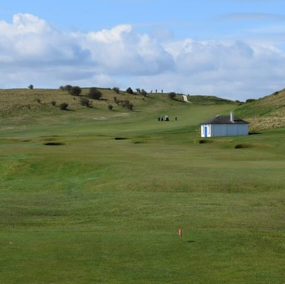

Par 71, yardage 6,466. While Muirfield may be the jewel in East Lothian's golfing crown, Gullane No. 1 is not far behind it, as many of those who have played here in the Open Championship qualifying, Men's and Women's Scottish Opens over the years have testified. It is links golf at its best, the difficulty factor being increased at some holes by their undulating nature and breezes from across the Firth of Forth. The climb alone is worth it, though, when you can stand on the seventh tee and enjoy a panoramic view of Edinburgh, the Forth Bridges and Fife. Golf has been played over the links of Gullane for more than 350 years. Gullane peninsula is blessed with spectacular elevations and seaside views, superb turf and climate that allows year round golf.
The three golf courses at Gullane Golf Club are simply known by number reflecting their age. Gullane No. 1 is carved over picturesque elevations, ancient links turf along the craggy edges of the Firth, pot bunkers, wispy grasses and smooth-rolling greens. The architect of Gullane No. 1 is unknown but nature had much to do with the course layout! Gullane No. 2 was laid out by the legendary Willie Park Jr. and has been hosted Open Championship Qualifying as well as Seniors Open Qualifying and Amateur Tournaments. Gullane No. 3 is the shortest of the three courses, but provides a wonderful test based on shot-making skills rather than power.
Gullane Golf Club offers a unique range of golf experiences for its members and visitors alike, combining a major role in the history of Scottish golf, great golfing conditions and a truly spectacular environment.
Picturely located at the heart of the East Lothian golfing-coast, Marine Hotel overlooks the 16th hole of North Berwick's championship links. It offers guests 83 well-appointed, individually decorated ensuite guestrooms, including 6 four-posters, 5 suites and 4 mini-suites. Each provides guests with a range of facilities and golf aficionados should opt for one of the rooms offering views over the sea and golf course. The well-equipped leisure centre with sauna, solarium and swimming pool is ideal for guests who enjoy relaxing after a vigorous day on the links.
Suggested hotel: Marine Hotel & Spa